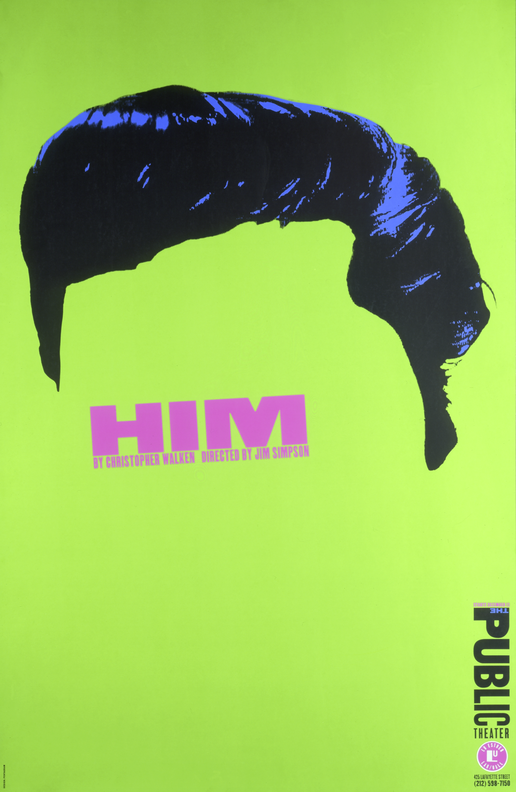
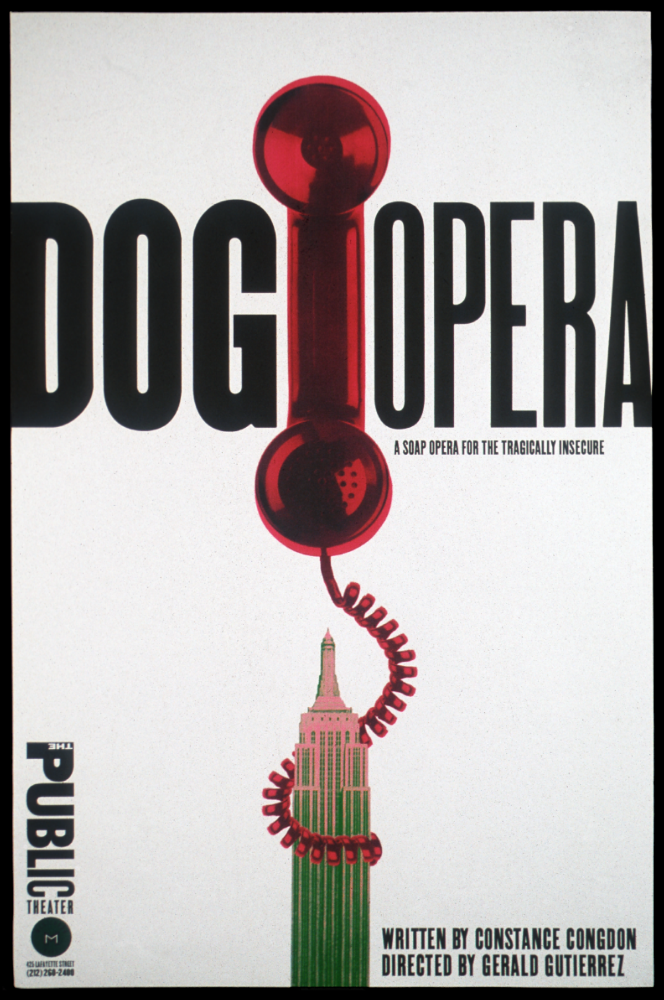
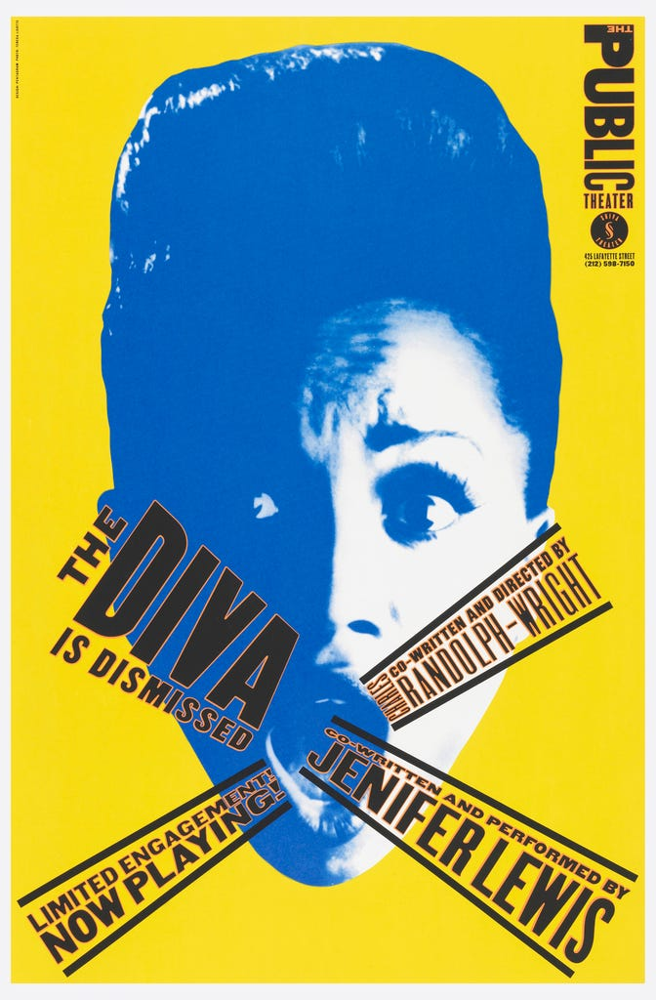
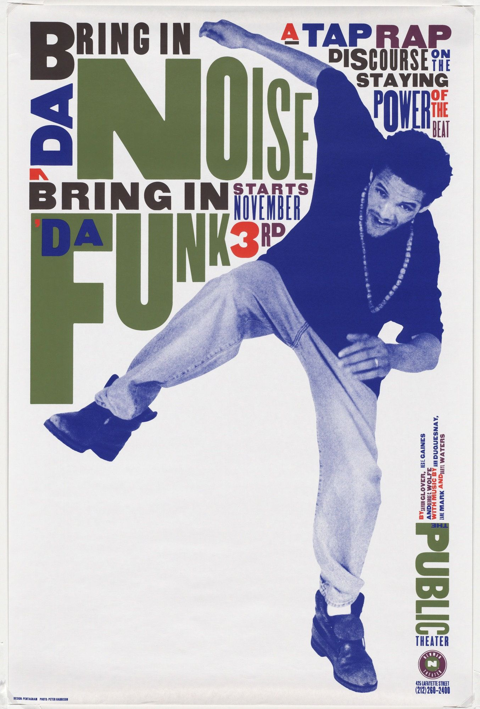

In the 1990s, Paula Scher began painting colorful typographic maps of the world,
its continents, countries, islands, oceans, cities, streets and neighborhoods.
The paintings are collected for the first time in Paula Scher: Maps.
Poster of The Public

Him

Dog Opera

The Diva is Dismissed
How are you

Bring in ‘da Noise, Bring in ‘da Funk
Unite of map and art
MAPS presents 39 paintings, drawings, prints and environmental installations,
including Scher’s commission for New York City’s Queens Metropolitan Campus.
Many of Scher’s original paintings are huge—as tall as 12 feet—and the book
reproduces the works in full and in life-size details that reveal layers of
hand-painted place names, information and cultural commentary. The book’s
jacket folds out into a 3’ by 2’ poster of a portion of World Trade, a painting
from 2010.
The book opens with an essay by Scher about the influence of her father,
a photogrammetic engineer who worked on aerial photography for the U.S.
Geological Service in the 1950s and taught her that maps were never totally accurate.